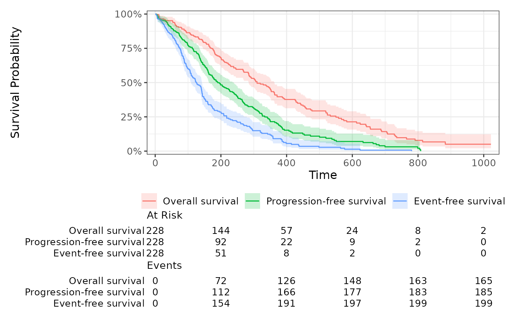

Stack multiple survival endpoints into a single survfit2 object
Source: R/survfit_stack.R
survfit_stack.RdThis function combines several survival endpoints from the same dataset by stacking them
into a long format and fitting a single survfit object.
It does not support competing risks models (i.e., when the event variable is a factor).
Arguments
- data
A data frame containing the survival variables.
- surv_list
A named list where each element is a character vector of:
Length 2:
time,event(for standard right-censored survival)Length 3:
time1,time2,event(for interval-censored survival and left truncation)
The names of the list elements will be used as a grouping variable in the output.
Examples
library(dplyr)
#>
#> Attaching package: ‘dplyr’
#> The following objects are masked from ‘package:stats’:
#>
#> filter, lag
#> The following objects are masked from ‘package:base’:
#>
#> intersect, setdiff, setequal, union
set.seed(42)
df_surv = survival::lung %>%
as_tibble() %>%
mutate(
time_os = time,
event_os = status == 2,
time_pfs = time / (1 + runif(n())),
event_pfs = ifelse(runif(n()) > 0.3, event_os, 1),
time_efs = time_pfs / (1 + runif(n())),
event_efs = ifelse(runif(n()) > 0.3, event_pfs, 1)
)
surv_list = list(
"Overall survival" = c("time_os", "event_os"),
"Progression-free survival" = c("time_pfs", "event_pfs"),
"Event-free survival" = c("time_efs", "event_efs")
)
if(require("ggsurvfit")){
df_surv %>%
survfit_stack(surv_list=surv_list) %>%
ggsurvfit() +
add_confidence_interval() +
add_risktable() +
scale_ggsurvfit()
}
#> Loading required package: ggsurvfit
#> Loading required package: ggplot2
#> Warning: Function `survfit_stack()` (`?grstat::survfit_stack()`) is not yet validated
#> and may produce incorrect results.
#> ! Always double-check the results using your own code.
#> ℹ Please send your feedback to the grstat team.
#> This warning is displayed once every 8 hours.
